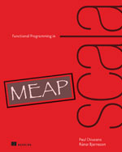
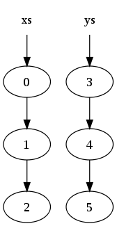

Functional Programming in Scala
Functional Data Structures
Created by Mark Perry, @mprry, G+, Blog, LinkedIn, GitHub, maperry78@yahoo.com.au
|  |  |
 |
Introduction
- FP does not update data
- What do we use instead?
- Pattern Matching
- Pure functions
Functional Data Structures
- Values are immutable!
- Use pure functions
- Data copying issue?
Singly Linked List
- We derive Scala's List
- See List.scala
sealed trait List[+A]
case object Nil extends List[Nothing]
case class Cons[+A](head: A, tail: List[A]) extends List[A]
Immutable Structures
- Reuse list due to immutability
- Data sharing
- Avoid copying in loosely coupled OO
List Sharing
def list1 = List(0, 1, 2)
def list2 = List(3, 4, 5)
def list3 = list1 ++ list2
|  |  |
Tree Insertion
def tree = ???
def tree2 = insert("e", tree)
Tree Insertion (2)
def tree = ???
def tree2 = insert("e", tree)

Pattern Matching
sealed trait List[+A]
case object Nil extends List[Nothing]
case class Cons[+A](head: A, tail: List[A]) extends List[A]
def sum(ints: List[Int]): Int = ints match {
case Nil => 0
case Cons(x, xs) => x + sum(xs)
}
def product(ds: List[Int]): Int = ds match {
case Nil => 1.0
case Cons(x, xs) => x * product(xs)
}
Pattern Matching Examples
List(1,2,3) match { case _ => 42 } // 42
List(1,2,3) match { case Cons(h,t) => h } // 1
List(1,2,3) match { case Cons(_,t) => t } // List(2, 3)
List(1,2,3) match { case Nil => 42 } // runtime MatchError
Data Sharing Summary
- Efficiency from data sharing
- Often needs tree structures
- Example Scala Vector, O(1)
- random access
- update
- head, tail, init
- prepend, append
Exercises
- Implement tail
- Generalise tail to dropWhile
def tail[A](l: List[A]): List[A]
def dropWhile[A](l: List[A], f: A => Boolean): List[A]
Recursion over Lists
Look similar?
def sum(ints: List[Int]): Int = ints match {
case Nil => 0
case Cons(x,xs) => x + sum(xs)
}
def product(ds: List[Int]): Int = ds match {
case Nil => 1
case Cons(x, xs) => x * product(xs)
}
Fold
def foldRight[A,B](l: List[A], acc: B, f: (A, B) => B): B =
l match {
case Nil => acc
case Cons(x, xs) => f(x, foldRight(xs, acc)(f))
}
def sum2(l: List[Int]) =
foldRight(l, 0, _ + _)
def product2(l: List[Int]) =
foldRight(l, 1, _ * _)
foldRight(List(1, 2, 3), 0, _ + _)
1 + foldRight(Cons(2, Cons(3, Nil)), 0, _ + _)
1 + (2 + foldRight(Cons(3, Nil), 0, _ + _))
1 + (2 + (3 + (foldRight(Nil, 0, _ + _))))
1 + (2 + (3 + (0)))
6
Exercises
def foldLeft[A,B](l: List[A], acc: B, f: (B, A) => B): B = ???
def reverse[A](l: List[A]): List[A] = ???
def map[A,B](l: List[A], f: A => B): List[B] = ???
def flatMap[A,B](l: List[A], f: A => List[B]): List[B] = ???
Trees
- Algebraic Data Type (ADT)
- Not Abstract Data Type (ADT)
- One or more data constructors
- Data type is sum of data constructors
- Data constructor is product of arguments
- Immutability over encapsulation
Tree Definition
sealed trait Tree[+A]
case class Leaf[A](value: A) extends Tree[A]
case class Branch[A](left: Tree[A], right: Tree[A]) extends Tree[A]
def depth[A](tree: Tree[A]): Int = ???
def map[A, B](tree: Tree[A], f: A => B): Tree[B] = ???
Tree Insertion
def tree = ???
def tree2 = insert("e", tree)
Summary
- Pattern Matching
- Data Sharing
- Practiced Pure Functions
- Algebraic Data Types
Afterword
Functional Programming in Scala, Chiusano and Bjarnason, Chapter 3, Functional Data Structures
|
|
Created by Mark Perry, @mprry, G+, Blog, LinkedIn, GitHub, maperry78@yahoo.com.au